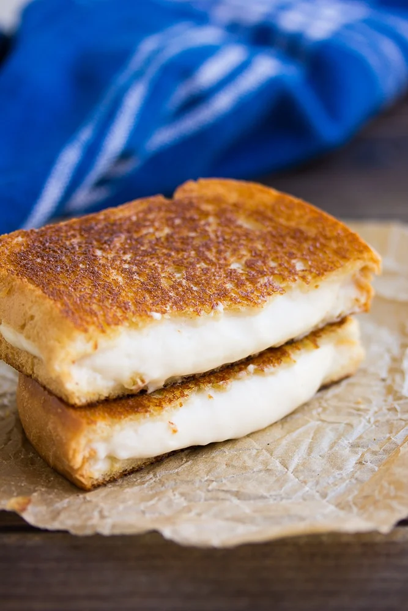

Vegan Mozzarella

Perfect for grilled cheese or a topping to Nora's lasagna, this dairy-free mozz broils nicely in the oven for open-faced sandwiches.
This recipe and photo are property of Nora Cooks and have been republished here for educational purposes only. Be sure to check out her website for more great recipes!
Ingredients
- 1/2 cup raw cashews, soaked
- 1 1/3 cups water
- 1 tablespoon lemon juice, fresh from about 1/2 lemon
- 1 tablespoon apple cider vinegar
- 1/2 teaspoon salt
- 4 tablespoons tapioca starch
Directions
- Boil 2 cups of water (I just heat up water in my tea kettle). Pour the water over the cashews and let soak for 5 minutes and up to an hour.
- Drain the cashews, and add them to a blender along with 1 1/3 cups fresh water (not the water you soaked the cashews in), lemon juice, apple cider vinegar, salt and tapioca starch. Blend until very smooth, scraping down the sides of the blender as needed. It will be very watery at this point.
- Now pour the watery mixture into a small saucepan and bring the heat to medium. Begin to stir with a spatula or spoon.
- After a few minutes, it will begin to get clumpy. Keep stirring, constantly until suddenly it will become super gooey, stretchy, thick and smooth. It will become one big mass of stretchy vegan cheese. Remove from heat as soon as this happens.
- Use immediately, or store in a covered container in the refrigerator. It is easiest to use immediately, because it will thicken up more in the fridge and be less stretchy. So if possible, especially for using on pizza or lasagna, make right before using.
For pizza, drop 1-2 tablespoon sized balls onto the crust and pat down a little bit. Or spread it all over. It will brown in the oven. For lasagna, drop dollops of the cheese all over the top towards the end of cooking time. Or place between bread and grill for grilled cheese.